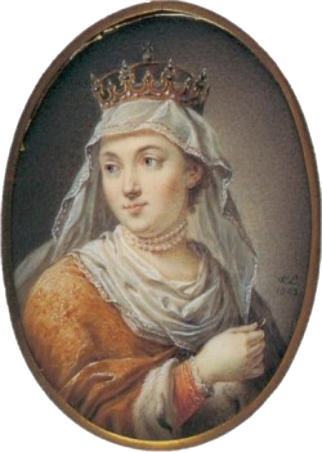
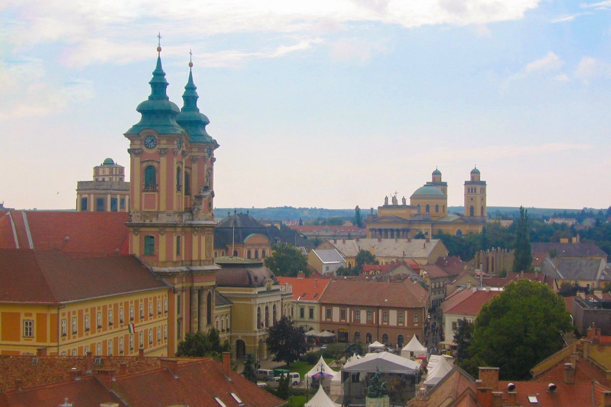

I. Jadwiga Królowa Polski (1384-1399)
W roku 2002 w Egerze arcybiskup, kardynał Franciszek Macharski w dowód potwierdzenia” wiecznej przyjaźni polsko-węgierskiej” przekazał polskim ojcom minorytom relikwie Jadwigi księżniczki węgierskiej, późniejszej królowej Polski kanonizowanej w roku 1997 przez Papieża Jana Pawła II, wraz z relikwiami Świętej Kingi i jej siostry błogosławionej Jolanty, którzy od tamtego czasu w egerskim Kościele Minorytów „strzegą” ich jako „czynów miłości” będących credo Świętej Królowej Jadwigi, charyzmatycznym symbolem narodu polskiego i węgierskiego a przez to również symbolem wartości Europy Środkowej.
Rólunk:
 Warszawa
Warszawa- Zamek Królewski -
 Budapeszt
Budapeszt- Zamek Królewski -
 Kraków
Kraków- Wawel -  Eger
"Magyarország és Lengyelország két örökéletű tölgy, melyek külön törzset növesztettek, de gyökereik a föld alatt messze futnak, összekapcsolódtak és láthatatlanul egybefonódtak. Ezért egyiknek léte és erőteljessége a másik életének és egészségének feltétele."
"Węgry i Polska to dwa wiekuiste dęby, każdy z nich wystrzelił pniem osobnym i odrębnym, ale ich korzenie, szeroko rozłożone pod powierzchnią ziemi, i splątały się, i zrastały niewidocznie. Stąd byt i czerstwość jednego jest drugiemu warunkiem życia i zdrowia."